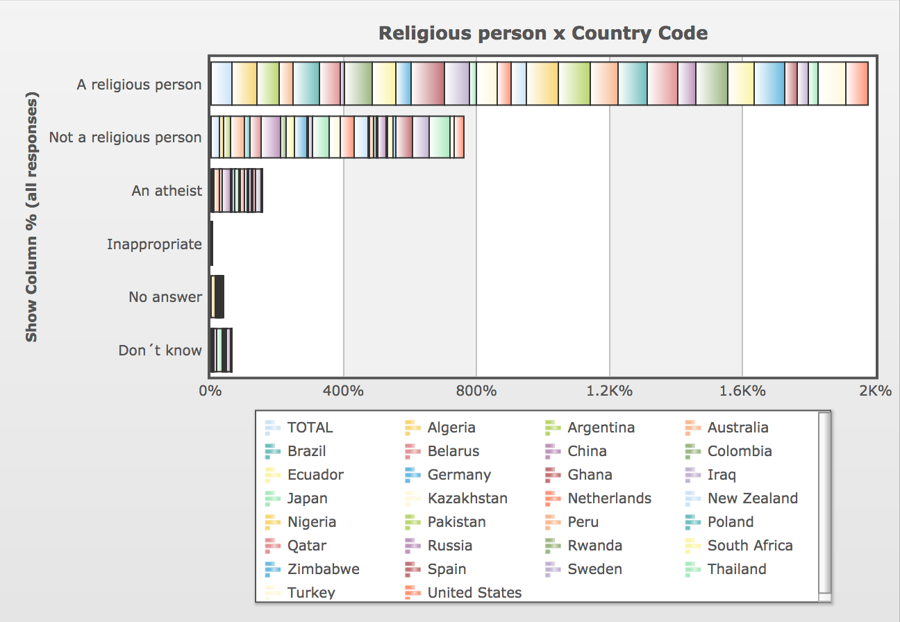

As a navigated on the WVS site, I discovered that there were questions about justifying certain dilemmas in life. I soon started to suspect that people with the same nationality might tend to be equally tolerant or intolerant, regardless of the topic. I also suspected that it might correlate with the nation's importance of religion, and decided to investigate it!
I selected 30 countries evenly from the continents, as following:

After that, I selected the 4 latest waves available and my main question "Religious person". I also selected 7 suitable ”Justifiable”-questions I suspected would correlate with the religiosity of the country.

When all data was selected, I downloaded it as Excel spreadsheets, one for each variable and wave. Every spreadsheet contained a mean value for every selected country for that specific wave and variable.
These mean values were collected in a new spreadsheet, and a new mean for every country and variable over a 20 year period was calculated. This spreadsheet was then converted to a CSV file, later used for my visualization.

Even though the data from WVS was quite messy, a correlation between religiousness and intolerance could be perceived from their visualization tools.
To be continued!